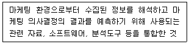
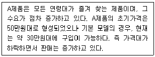
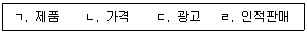
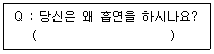
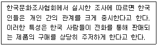
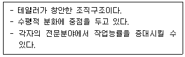
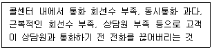

텔레마케팅관리사 (2021-05-15 기출문제)
1과목: 판매관리
1. 시장 세분화 시 심리 분석적 변수에 해당하지 않는 것은?
- 사회계층
- 라이프스타일
- 개성
- 연령
(정답률: 59%)

2. e-mail을 이용한 마케팅의 특성으로 옳지 않은 것은?
- e-CRM 중심의 접촉경로를 활용한다.
- 많은 비용이 소요된다.
- 쌍방향 커뮤니케이션을 추구한다.
- 전달속도가 빠르다.
(정답률: 90%)
3. 어느 특정기업이 소비자의 마음속에 자사상품을 원하는 위치로 부각시키려는 노력은?
- 이미테이션
- 포지셔닝
- 시장의 표적화
- 독점시장화
(정답률: 79%)
4. 다음은 마케팅정보 시스템 중 무엇에 관한 설명인가?

- 내부정보 시스템
- 마케팅 의사결정 지원시스템
- 고객정보 시스템
- 마케팅 인텔리전스 시스템
(정답률: 72%)
5. 다음 중 상대적인 고가전략이 가장 적합한 것은?
- 시장에서 경쟁자의 수가 많을 것으로 예상될 때
- 소비자의 수요를 자극하고자 할 때
- 높은 품질로 새로운 소비자층을 유인하고자 할 때
- 시장의 가격탄력성이 높을 때
(정답률: 77%)
6. 촉진전략 중 판매촉진 활동에 해당하지 않는 것은?
- 샘플제공
- 가격 할인
- 적극적인 광고 및 홍보
- 할인권 제공
(정답률: 46%)
7. 심리적 기능을 고려한 가격 책정 방법 중 구매자가 어떤 상품에 대해 지불할 용의가 있는 최고가격은?
- 유보가격
- 명성가격
- 단수가격
- 최저수용가격
(정답률: 48%)
8. 다음은 제품의 어떤 가격정책을 설명하는 것인가?

- 가격 탄력성(price elasticity)
- 시장침투 가격(penetration pricing)
- 명예 가격(prestige pricing)
- 초기 고가격(skimming pricing)
(정답률: 63%)
9. 마케팅정보 시스템의 하위시스템에 해당하지 않는 것은?
- 내부정보 시스템
- 마케팅조사 시스템
- 고객정보 시스템
- 경영정보 시스템
(정답률: 66%)
10. 상품라인(상품계열)의 깊이가 깊고, 폭이 좁은 상품구색을 지닐 가능성이 높은 소매업 형태는?
- 일반 소매점
- 전문점
- 슈퍼마켓
- 할인점
(정답률: 80%)
11. 제품을 소비용품(consumer products)과 산업용품(industial products)으로 분류할 때 소비용품에 해당되는 것은?
- 도구
- 설비
- 선매품
- 소모품
(정답률: 42%)
12. 아웃바운드 텔레마케터가 가져야 할 자질로서 적합하지 않은 것은?
- 밝고 생동감 있는 목소리
- 목표의식과 달성능력
- 수동적인 상담자세
- 인내심과 냉철한 판단력
(정답률: 77%)
13. 다음 중 표적시장의 마케팅 방법에 관한 설명으로 옳은 것은?
- 시장의 이질성이 클수록 비차별적인 마케팅이 적합하다.
- 경쟁자의 수가 적어 경쟁 정보가 약할수록 차별적인 마케팅이 적합하다.
- 기업의 기존 마케팅 및 조직문화와의 이질성이 큰 시장을 표적시장으로 선택하는 것이 좋다.
- 설탕, 벽돌, 철강 등의 제품은 비차별적인 마케팅이 적합하다.
(정답률: 57%)
14. 촉진믹스에 해당하는 것을 모두 고른 것은?

- ㄱ, ㄴ
- ㄴ, ㄷ
- ㄷ, ㄹ
- ㄱ, ㄴ, ㄷ, ㄹ
(정답률: 35%)
15. 표적시장을 선정하기 위한 세분시장의 평가요소와 가장 거리가 먼 것은?
- 기업의 내부고객
- 기업의 목표와 재원
- 세분시장의 규모와 성장
- 세분시장의 구조적 매력성
(정답률: 43%)
16. 인바운드 고객상담의 설명으로 옳은 것은?
- 각종 광고활동의 결과로 외부로부터 걸려오는 전화를 받는 것으로 소비자의 불만이나 의견, 문의 접수부터 주문, 예약 등을 체계적으로 처리하는 활동이다.
- 상담원 중심의 서비스가 제공되어 진다.
- 상담원이 무작위로 전화해서 상품을 판매한다.
- 홍보 활동이 전혀 필요하지 않다.
(정답률: 77%)
17. 텔레마케터가 잠재고객에게 판매를 성공시키기 위한 행위로 옳지 않은 것은?
- 현재고객으로부터 잠재고객의 정보를 얻는다.
- 잠재고객의 반대질문이 나오지 않도록 설명을 계속해야 한다.
- 잠재고객의 기본적인 정보를 숙지하고 난 후 접촉해야 한다.
- 제품 설명시에 상품 구입의 합리적 이유 뿐만 아니라 어느 정도 극적인 장면을 연출할 필요가 있다.
(정답률: 61%)
18. 인바운드 텔레마케팅이 지향하는 목표와 가장 거리가 먼 것은?
- 공격적이며 수익지향적인 마케팅
- 기존 고객과의 지속적 관계 유지
- 빈번한 질문에 대한 예상 답변준비
- 우수고객에 대한 서비스 차별화
(정답률: 73%)
19. 시장-제품전력 중 상품의 변화를 필요로 하지는 않지만, 기업으로 하여금 새로운 시장에서 새로운 고객을 찾는 활동을 필요로 하는 전략은?
- 시장침투전략
- 시장개발전략
- 제품개발전략
- 다각화전략
(정답률: 43%)
20. 유통경로의 설계과정이 맞는 것은?
- 고객욕구의 분석 → 주요 경로대안의 식별 → 경로대안의 평가 → 유통경로의 목표 설정
- 유통경로의 목표 설정 → 고객욕구의 분석 → 주요 경로대안의 식별 → 경로대안의 평가
- 유통경로의 목표 설정 → 주요 경로대안의 식별 → 경로대안의 평가 → 고객욕구의 분석
- 고객욕구의 분석 → 유통경로의 목표 설정 → 주요 경로대안의 식별 → 경로대안의 평가
(정답률: 56%)
21. 인바운드 상담절차로 옳은 것은?
- 상담준비 → 전화응답과 자신의 소개 → 문제해결 → 동의와 확인 → 고객 니즈 간파 → 종결
- 전화응답과 자신의 소개 → 상담준비 → 고객 니즈 간파 → 동의와 확인 → 문제해결 → 종결
- 상담준비 → 전화응답과 자신의 소개 → 고객 니즈 간파 → 문제해결 → 동의와 확인 → 종결
- 상담준비 → 고객 니즈 간파 → 문제해결 → 동의와 확인 → 전화응답과 자신의 소개 → 종결
(정답률: 76%)
22. 자사 브랜드를 명시적 혹은 묵시적으로 타사브랜드와 비교하는 비교 광고를 함으로써 자사의 브랜드를 부각시키는 포지셔닝 방법은?
- 사용자 포지셔닝
- 가격 포지셔닝
- 경쟁적 포지셔닝
- 이미지 포지셔닝
(정답률: 66%)
23. 가장 일반적인 소비자의 반응 순서는?
- 흥미유발(I) → 주목(A) → 욕구(D) → 행동(A)
- 주목(A) → 흥미유발(I) → 욕구(D) → 행동(A)
- 욕구(D) → 흥미유발(I) → 주목(A) → 행동(A)
- 주목(A) → 욕구(D) → 흥미유발(I) → 행동(A)
(정답률: 53%)
24. 항공사들은 자사의 비행기를 반복해서 이용하도록 장려하기 위해 상용고객 프로그램을 개발하였다. 이러한 세분화 기법은 다음 중 어떤 측면을 기반으로 설정한 것인가?
- 추구편익
- 구매의도
- 구매조건
- 서비스 이용률
(정답률: 60%)
25. 다음 중 인바운드 텔레마케팅 활용 사례에 해당하지 않는 것은?
- TV 홈쇼핑
- 고객지원센터
- 정부의 민원상담
- 시장조사
(정답률: 66%)
2과목: 시장조사
26. 시장조사의 중요성으로 옳지 않은 것은?
- 고객의 특성, 욕구, 그리고 행동에 대한 정확한 이해를 통해 고객지향적인 마케팅활동을 가능케 해준다.
- 마케팅 전략 수립 및 집행에 필요한 모든 정보를 적절한 시기에 입수할 수 있다.
- 시장조사는 타당성과 신뢰성 높은 정보의 제공을 통해 의사결정의 기대가치를 높일 수 있는 수단이 된다.
- 정확한 시장정보와 경영활동에 대한 효과분석은 기업목표의 달성에 공헌할 수 있는 자원의 배분과 한정된 자원의 효율적인 활용을 가능케 한다.
(정답률: 62%)
27. 웹 조사의 문제점으로 볼 수 없는 것은?
- 응답자가 정말로 진실을 말하고 있는 것인지 아닌지를 구분하기가 매우 어렵다.
- 인센티브를 받기 위해서 또는 자신의 의견을 더욱 많이 반영하기 위해서 여러 번 응답할 수도 있다.
- 타 조사방식에 비해 응답률이 매우 낮다는 문제가 있다.
- 조사 주제에 대해 개인적으로 관심이 많은 사람들만이 응답을 하게 되는 자기선택편향이 발생할 수 있다.
(정답률: 67%)
28. 자료수집 방법 중 전화조사 특성으로 거리가 먼 것은?
- 비용과 시간이 비교적 적게 든다.
- 전화번호부를 이용하여 비교적 정확하게 모집단을 추출할 수 있다.
- 대인면접과 같이 많은 정보를 얻을 수 있다.
- 시각자료나 보조도구를 활용할 수 없다.
(정답률: 49%)
29. 다음은 설문지에 작성된 질문내용이다. 이러한 질문이 해당하는 질문유형은?

- 리커트 척도
- 어의차이 척도
- 폐쇄형 질문
- 개방형 질문
(정답률: 68%)
30. 비용 효율화 측면을 고려한 우편조사의 회수율을 높이기 위한 방안으로 거리가 먼 것은?
- 예비조사를 통해 회수율을 사전예측하고 추가 계획을 수립한다.
- 설문지 발송 후 일정기간이 지나면 설문지와 반송봉투를 다시 발송한다.
- 응답된 설문지에 대해 각종 이벤트에 참석할 수 있도록 기회를 제공한다.
- 고객에게 우편을 보냄과 동시에 동일한 내용을 전화상으로 설명하여 고객의 이해를 돕는다.
(정답률: 38%)
31. 시장조사의 조사방법 중 탐색조사의 종류가 아닌 것은?
- 문헌조사
- 표적집단면접법
- 사례조사
- 실험조사
(정답률: 49%)
32. 4세 미만 여아들을 대상으로 선호하는 장난감 유형에 관한 조사를 시행하려 할 때 가장 적합한 조사방법은?
- 관찰조사
- 면접조사
- 전화조사
- 설문조사
(정답률: 77%)
33. 다음 중 2차 자료에 관한 설명으로 틀린 것은?
- 2차 자료의 정보는 시간이 경과하더라도 그 효용성이 매우 높다.
- 2차 자료는 다른 조사목적을 위해 수집된 간접적인 자료이므로 당면 의사결정문제에 적절한 정보를 제공하지 못할 수도 있다.
- 의사결정에 도움이 되는 2차 자료를 입수할 수 있다면 조사자는 시간과 비용을 절감할 수 있다.
- 유능한 조사자라면 중요한 2차 자료원과 이를 활용하는 방법을 잘 알아야 한다.
(정답률: 51%)
34. 시장조사의 주체가 표본추출방법을 결정할 때 반드시 같이 결정해야 할 사항으로 조사비용 및 조사의 정확도와 가장 밀접한 관련성을 가지는 것은?
- 모집단의 대상
- 표본의 크기
- 면접원의 수
- 신뢰구간의 크기
(정답률: 53%)
35. 텔레마케터를 활용하여 보험 상품을 판매하는 보험사가 다음과 같은 자료를 확보하였다. 이 자료의 유형은?

- 내부 2차자료
- 외부 2차자료
- 내부자료
- 1차자료
(정답률: 65%)
36. 측정의 수준에 따라 4가지 종류의 척도로 구분할 때, 가장 적은 정보를 갖는 척도부터 가장 많은 정보를 갖는 척도를 순서대로 나열한 것은?
- 명목척도, 비율척도, 등간척도, 서열척도
- 서열척도, 명목척도, 등간척도, 비율척도
- 명목척도, 서열척도, 등간척도, 비율척도
- 명목척도, 서열척도, 비율척도, 등간척도
(정답률: 49%)
37. 면접조사의 원활한 자료수집을 위해 조사자가 응답자와 인간적인 친밀 관계를 형성하는 것은?
- 라포(rapport)
- 사회화(socialzation)
- 개념화(conceptualization)
- 조작화(operationalization)
(정답률: 65%)
38. 설문지 작성 시 질문의 순서를 결정하기 위한 일반적인 사항으로 옳지 않은 것은?
- 첫 번째 질문은 응답자의 부담감을 덜어줄 수 있도록 쉽고 재미있으며 응답자가 관심을 가질 수 있는 내용이면 좋다.
- 문항이 담고 있는 내용의 범위가 좁은 것에서부터 점차 넓어지도록 문항들을 배열하는 것이 좋다.
- 응답자들은 일반적으로 인구통계학적인 질문(직업, 성별, 연령 등)에 대해 응답을 회피하므로, 가능한 설문지의 마지막 부분에 배치하는 것이 좋다.
- 갑작스러운 논리의 전환이 이루어지지 않도록 질문의 순서를 정하여야 한다.
(정답률: 40%)
39. 마케팅 조사의 과학적 특성으로 적절하지 않은 것은?
- 이론적으로 근거가 있는 객관적 사실에 입각하여 자료를 수집한다.
- 현재의 사실에만 국한하여 사실의 원인을 설명해야 한다.
- 구성요소들의 상관관계, 원인 등을 분석한다.
- 이론이나 가설이 보편적으로 적용될 수 있어야 한다.
(정답률: 67%)
40. 설문지 작성에서 폐쇄형 질문의 장점으로 가장 거리가 먼 것은?
- 자료의 코딩이 용이하다.
- 응답 관련 오류가 개방형 질문에 비해 적다.
- 양적 연구에 적합하다.
- 개방형 질문에 비해 새로운 사실을 발견할 가능성이 크다.
(정답률: 62%)
41. 자료의 신뢰성을 확보하기 위한 방법과 가장 거리가 먼 것은?
- 측정항목을 늘린다.
- 설문지의 모호성을 제거한다.
- 동일한 질문이나 유사한 질문을 2회 이상 한다.
- 면접자들의 면접방식과 태도를 피면접자에 따라 다양하게 진행한다.
(정답률: 57%)
42. 전수조사와 비교하여 표본조사가 가지는 이점으로 불 수 없는 것은?
- 시간과 비용, 인력을 절약할 수 있다.
- 조사대상자가 적기 때문에 조사과정을 보다 잘 통제할 수 있다.
- 통계자료로부터 올바른 모수추정이 어려운 경우에 더 효율적이다.
- 비표본오류를 상대적으로 더 많이 줄일 수 있기 때문에 정확도를 높일 수 있다.
(정답률: 40%)
43. 연구의 단위(UNIT)를 혼동하여 집합단위의 자료를 기반으로 개인의 특성을 추리할 때 발생할 수 있는 오류는?
- 집단주의 오류
- 생태주의 오류
- 개인주의 오류
- 환원주의 오류
(정답률: 26%)
44. 시장조사를 위한 면접조사 시 발생되는 단점으로 거리가 먼 것은?
- 면접을 적용할 수 있는 지리적인 한계가 있다.
- 비언어적인 커뮤니케이션 보다 언어적인 커뮤니케이션만을 통해 자료를 수집한다.
- 면접자를 훈련하는데 많은 비용이 소요된다.
- 응답자들이 자신의 익명성 보장에 대해 염려할 소지가 있다.
(정답률: 60%)
45. 마케팅조사 업체들이 조사 업무 수행 시 지켜야 할 사항으로 볼 수 없는 것은?
- 사전에 정한 표분추출대상을 추출하고 정확한 조사를 실시해야 한다.
- 면접원의 교육과 감독을 철저히 하여 올바른 자료가 수집되도록 해야 한다.
- 조사 자료의 분석과 해석은 조사 의뢰 회사가 원하는 방향으로 맞추어서 해야 한다.
- 조사실시과정에서 일어난 오류는 조사 의뢰 회사에 보고해야 한다.
(정답률: 64%)
46. 전화 설문 조사 후 진행되는 편집 작업에 대한 설명으로 틀린 것은?
- 일반적으로 자료 처리의 첫 단계라고 한다.
- 수집된 설문 응답의 오기, 누락, 착오 등을 교정하는 단계이다.
- 수집된 설문 응답을 애매하고 모호한 점이 없도록 일정한 기준에 따라 체계적으로 검토하는 일이다.
- 각 응답항목에 계통적 번호를 매기는 작업이다.
(정답률: 48%)
47. 면접조사 시 면접조사원이 지켜야할 사항과 가장 거리가 먼 것은?
- 응답자가 불필요한 말을 할 때는 질문에 관련된 화제로 자연스럽게 유도한다.
- 직접 만나서 면접조사를 해야 할 경우에 전화로 조사를 해서는 안 된다.
- 면접조사를 할 때 친구나 다른 사람을 대동하는 것이 응답자의 어색함을 덜어주므로 가급적 함께 다닌다.
- 응답결과를 다른 사람에게 자세히 이야기 하지 않는다.
(정답률: 67%)
48. 표집과 관련된 용어에 대한 설명으로 틀린 것은?
- 모집단이란 우리가 규명하고자 하는 집단의 총체이다.
- 표집단위란 표집과정의 각 단계에서의 표집대상을 지정한다.
- 관찰단위의 직접적인 조사대상을 의미한다.
- 표집간격이란 표본을 추출할 때, 추출되는 표집단위와 단위간의 간격을 의미한다.
(정답률: 22%)
49. 시장조사의 특성에 해당하지 않는 것은?
- 조사 자료는 오직 조사 의뢰자에게 이해됨을 원칙으로 하며, 보편성보다는 특수성에 충실해야 한다.
- 타당성, 신뢰성, 적시성을 갖춘 정보를 과학적 방법에 의해 수집하고 분석, 해석, 보고해야 한다.
- 조사시기와 조사기간을 고려하여 최적의 시점에 정보가 제공될 수 있도록 함으로써 정보의 가치를 증대시켜야 한다.
- 체계성, 객관성, 실증성, 간주관성을 유지해야 한다.
(정답률: 71%)
50. 자료의 측정에 있어 타당성을 높일 수 있는 방법으로 가장 적절하지 않은 것은?
- 연구 담당자가 마케팅의 전반 영역에 대한 깊은 지식을 습득한다.
- 이미 타당성을 인정받은 측정방법을 이용한다.
- 사전조사를 통하여 상관관계가 낮은 항목들을 제거한 후 관계가 높은 변수들만을 개념측정에 이용한다.
- 측정 시 문항의 수를 적게 하여 자료의 측정 타당도를 높인다.
(정답률: 66%)
3과목: 텔레마케팅관리
51. 직무를 분류하고 다수의 평가요소들에 대하여 평가된 점수의 고저에 의해 그 직무가 갖는 상대적 가치를 결정하는 직무평가방법은?
- 점수법
- 요소비교법
- 서열법
- 분류법
(정답률: 42%)
52. 콜센터 조직의 안정화와 거리가 먼 것은?
- 콜센터 상담원과 매니저 사이의 장벽 제거
- 안정된 근로조건의 필요성
- 단계적인 생산지표관리의 필요성
- 콜센터 심리공황의 임시적 방지책 강구
(정답률: 46%)
53. 인사고과의 목적에 해당하지 않는 것은?
- 인력배치 및 이동
- 직무의 가치평가
- 성과측정 및 보상
- 조직개발 및 근로의욕 증진
(정답률: 37%)
54. 텔레마케팅의 분류에 관한 설명으로 적합하지 않은 것은?
- 발신주체에 따라 인바운드와 아웃바운드 텔레마케팅으로 구분할 수 있다.
- 운영주체에 다라 인하우스와 에이전시 텔레마케팅으로 구분할 수 있다.
- 활동장소에 따라 기업간과 소비자 텔레마케팅으로 구분할 수 있다.
- 고객유형에 따라 B2B와 B2C 텔레마케팅으로 구분할 수 있다.
(정답률: 47%)
55. 정보화 등 조직의 환경 변화는 인사관리에도 변화를 초래하고 있는데 그 변화 방향에 대한 설명으로 틀린 것은?
- 일상적, 운영적 → 장기적, 전략적
- 기능중심적 → 성과중심적
- 통제적 → 동반자적
- 문제해결지향적 → 활동중심적
(정답률: 36%)
56. 인바운드 스크립트에 대한 설명으로 가장 거리가 먼 것은?
- 고객 주도형으로 정형적인 스크립트를 작성하는 것이 비교적 쉽다.
- 상품의 판매나 주문으로 결부시켜가는 것이 비교적 쉽다.
- 기업의 이미지 향상 및 고객 만족 향상에 크게 공헌할 수 있다.
- 인바운드 스크립트는 주어진 상황을 잘 반영해야 한다.
(정답률: 29%)
57. 통화 품질 관리(QA)의 핵심 성공 요인으로 볼 수 없는 것은?
- 통화품질 규정의 마련
- 전문평가 인력의 활용
- 평가자의 주관이 반영되는 평가표
- 합리적 평가표 마련
(정답률: 65%)
58. 콜센터 시스템 매니저의 역할로 적합하지 않은 것은?
- 콜센터 전반의 시스템을 관리하고, 시스텝 업그레이드를 실시한다.
- 시스템의 장애를 예방하고 장애 시 신속히 복구하여야 한다.
- 보안에 대처하여 서비스 연속성을 관리하여야 한다.
- 콜센터 서비스 관리 지표에 대한 계획과 인력 계획을 수립하여야 한다.
(정답률: 50%)
59. 직무분석 및 직무평가를 실시하여 직무의 자격요건에 따라 적격자를 선정하여 승진시키는 제도는?
- 직계승진
- 대용승진
- 자격승진
- 역직승진
(정답률: 24%)
60. 변혁적 리더십에서 변혁적 리더의 특징이 아닌 것은?
- 예외에 의한 관리
- 카리스마
- 영감고취
- 개별적 배려
(정답률: 22%)
61. 콜센터 시스템의 구성요소에 대한 설명으로 옳은 것은?
- 콜센터는 CTI를 통해 교환기로 전화회선을 수용한다.
- DB서버는 교환기에 연결되는 모든 콜에 대해 데이터를 저장하고 관리한다.
- 다이얼러 모듈은 인바운드 서비스를 자동처리하는 시스템이다.
- ARS는 적정 상담원에게 자동으로 전화를 배분하는 역할을 한다.
(정답률: 44%)
62. 인바운드 콜센터의 성과지표가 아닌 것은?
- 평균 후처리 시간
- 서비스 레벨
- 성공 콜
- 스케쥴 준수율
(정답률: 25%)
63. 아웃바운드 콜센터의 성과분석 관리지표에 관한 설명으로 옳은 것은?
- 사용 대비 고객획득률은 총 고객 DB 불출 건수 대비 고객으로 유지하는 비율을 말한다.
- 아웃바운드 TM의 경우 콜당 평균 전화비용은 1콜당 평균적으로 소요되는 전화비용의 정도를 말한다.
- 콜 접촉률은 아웃바운드 TM을 실행한 후 고객과 접촉 및 미접촉한 총 건수를 말한다.
- 총매출액은 일정기간 동안 아웃바운드 TM을 실행한 결과 발생한 총이익을 말한다.
(정답률: 37%)
64. 다음은 어떤 조직구조에 관한 설명인가?

- 네트워크조직
- 매트릭스조직
- 기능식조직
- 사업부제조직
(정답률: 31%)
65. 성과주의 인사제도의 구성요소에 해당되지 않는 것은?
- 선별적 채용
- 성과주의 평가
- 보상제도
- 연공서열 위주의 승진
(정답률: 58%)
66. 리더십연구 학자와 그 리더십이론의 연결이 옳지 않은 것은?
- 피들러(Fiedler) : 상황이론
- 블레이크와 머튼(Blake & Mouton) : 관리격자이론
- 그린리프(Greenleaf) : 서번트(servant)
- 허시외 블랜차드(Hersey & Blanchard) : 경로-목표이론
(정답률: 26%)
67. 허시와 블랜차드(Hersey & Blanchard)의 리더십 유형 중 과업지향성과 관계지향성이 모두 낮은 상태로 지도자가 거의 영향력을 행사하지 않는 유형은?
- 지시형
- 지원형
- 참여형
- 위양형
(정답률: 51%)
68. 다음 중 수평적 분화를 결정하는 조직화의 원칙은?
- 권한위양의 원칙
- 전문화의 원칙
- 조정의 원칙
- 명령일원화의 원칙
(정답률: 30%)
69. 하급자들을 스스로 판단하고 행동하며 그 결과를 책임질 수 있는 셀프리더로 키우는 리더십은?
- 슈퍼 리더십
- 서번트 리더십
- 카리스마적 리더십
- 거래적 리더십
(정답률: 39%)
70. 직장외 교육훈련(OFF JT)의 장점에 해당하지 않는 것은?
- 많은 종업원들에게 동시적·통일적 교육 실시 가능
- 전문가의 지도아래 교육훈련에 전념 가능
- 교육훈련과 업무가 직결됨
- 참가자간의 선의의 경쟁을 통한 교육효과 증대
(정답률: 41%)
71. 상담원들의 고객 상담 및 서비스 품질의 강점과 약점을 평가하고 측정하기 위해 고객과의 콜 상담내용을 듣거나 또는 멀티미디어를 통해 접촉내용을 관찰하는 모든 과정은? (문제 오류로 가답안 발표시 4번으로 발표되었지만 확정답안 발표시 3, 4번이 정답처리 되었습니다. 여기서는 가답안인 4번을 누르시면 정답 처리 됩니다.)
- Call Taping
- QT(Queue Time)
- QA(Quality Assurance)
- QM(Quality Monitoring)
(정답률: 65%)
72. 콜센터 문화에 영향을 미치는 사회적 요인에 해당되지 않는 것은?
- 행정당국의 제도적 지원
- 상담원의 근로선택의 자유로움
- 상담원에 대한 직업의 매력도
- 상담원의 콜센터 근무만족도
(정답률: 30%)
73. 신뢰성의 측정도구에 해당하지 않는 것은?
- 시험-재시험방법
- 동시타당성
- 대체형식법
- 내적일관성
(정답률: 16%)
74. 텔레마케팅에 대한 설명으로 가장 거리가 먼 것은?
- 텔레마케팅은 시간, 공간, 거리의 장벽을 해소할 수 있다.
- 1:1 쌍방향 커뮤니케이션으로 인간적 관계형성이 될 수 있다.
- 타 매체와의 연동이 어렵다.
- 텔레마케팅은 즉각적인 고객의 반응을 알 수 있다.
(정답률: 63%)
75. 인사평가 오류유형 중 어느 한 평가요소가 피평가자의 다른 평가에 영향을 미치는 오류는?
- 유사오류
- 대조효과
- 현혹효과
- 논리적 오류
(정답률: 43%)
4과목: 고객응대
76. 효과적인 커뮤니케이션을 개발하기 위해서는 체계적인 단계를 거쳐야 한다. 각 단계에 대한 설명 중 잘못된 것은?
- 표적확인 : 마음속으로 분명하게 정한 표적청중으로부터 시작해야 한다.
- 목표설정 : 명확한 목표를 설정해야 한다.
- 메시지 설계 : 무엇을 말할 것인지, 어떻게 말할 것인지, 누가 말한 것인지 등의 커뮤니케이션을 설계해야 한다.
- 매체맥스 결정 : 효과적인 커뮤니케이션을 위해 가장 영향력이 큰 방송 매체를 선정한다.
(정답률: 48%)
77. 잘못된 서비스로 인하여 고객에게 사과를 해야할 때 취할 자세와 가장 거리가 먼 것은?
- 고객의 기분을 인정하고, 책임을 공유할 것임을 표현한다.
- 고객에 대한 배려와 관심을 보여주고, 어떻게 해결하면 좋을까를 물어본다.
- 고객에게 사과하고 응대를 종료한다.
- 진지하게 사과를 한 후 계속해서 고객과 거래할 기회를 달라고 요청한다.
(정답률: 50%)
78. 다음에서 설명하는 것은?

- 포기콜
- 오프콜
- 인바운드콜
- 콜장애
(정답률: 48%)
79. 효과적인 커뮤니케이션을 위해 메시지 전달자에게 요구되는 사항으로 틀린 것은?
- 전달하는 내용에 대한 명확한 목표설정이 있어야 한다.
- 적절한 커뮤니케이션 수단을 활용해야 한다.
- 자신이 원하는 메시지를 전하고 기다리는 소극적인 커뮤니케이션 자세가 필요하다.
- 상호간의 공감적인 관계형성을 위해 노력해야 한다.
(정답률: 67%)
80. 고객서비스에 등장배경과 가장 거리가 먼 것은?
- 공급이 수요보다 초과되어 기업의 고객중심적 마케팅 활동의 확산
- 소비자 불만 및 피해급증으로 인한 소비자 문제의 심화
- 소비자보호원의 설립, 기업의 고객센터 및 상담센터 설립의 확산
- 소비자 권익실현에 대한 소비자의 기대수준 증가 등 소비자 의식 고조
(정답률: 27%)
81. 단호한 행동스타일을 가진 고객과 상담할 때 적합한 상담기술이 아닌 것은?
- 고객의 이야기를 듣고 자신의 이야기를 재미있게 한다.
- 질문에 직접적이고 간결하며 사실적인 대답을 한다.
- 상황의 해결을 목표로 한 구체적인 질문을 한다.
- 고객이 말할 기회를 제공한다.
(정답률: 53%)
82. 고객응대시 필요한 지식과 거리가 먼 것은?
- 고객의 구매심리 및 고객시장에 관한 지식
- 제품 및 서비스에 관한 지식
- 통신시스템에 대한 전문적 지식
- 생산, 유통 과정과 품질에 관한 지식
(정답률: 60%)
83. RFM 분석에 대한 설명으로 적합하지 않은 것은?
- 최근 구매일(Recency) : 고객이 최근 구매한 날로부터 얼마나 지났는지 측정하는 항목
- 구매빈도(Frequency) : 정해진기간 내에 각 고객이 얼마나 많이 구매했는지 측정하는 항목
- 구입금액(Monetary) : 고객이 구매 시 평균적으로 얼마나 많은 돈을 지불하는지 측정하는 항목
- 구매횟수(Recency) : 고객이 최근에 몇 번이나 자사의 제품이나 서비스를 구매했는지를 측정하는 항목
(정답률: 46%)
84. 기업에서 고객만족을 위해 고객서비스를 중요하게 고려해야하는 이유로 가장 옳은 것은?
- 전반적인 고객서비스에 대한 고객의 기대가 핵심제품에 대한 기대보다 높기 때문이다.
- 인터넷의 대중화로 판매자와 고객 간의 대면기회가 감소하고 있기 때문이다.
- 내부고객에 대한 고객서비스가 외부고객에 대한 고객서비스로 연결되기 때문이다.
- 제품의 물리적 품질에 큰 차이가 없으면 소비자들은 고객서비스를 통해 전체 품질을 평가하기 때문이다.
(정답률: 55%)
85. CRM의 목적은 고객의 이익 극대화와 이를 통해 기업의 수익성을 극대화하는 것이다. 다음 중 CRM의 목적 달성을 위한 특성이 아닌 것은?
- 목표시장과 목표고객에 대한 고객관계의 집중화에 노력한다.
- 고객과 관계를 유지하는 것보다는 다양한 상품 및 할인정책을 제시하여 보다 더 많은 고객을 획득하는 것을 주목적으로 한다.
- 고객에 대한 이해와 반응을 분석하고, 고객의 욕구를 파악하여 고객이 원하는 상품을 만든다.
- 기존고객 및 잠재고객을 위한 마케팅전략을 통해 고객 점유율을 높이는 전략이 필요하다.
(정답률: 61%)
86. CRM을 통해 고객기반의 가치를 향상시키기 위한 전략으로 보기 어려운 것은?
- 고가치 고객에 대해 노력을 기울인다.
- 고객이탈률을 줄인다.
- 교차판매 및 고가제품 판매를 통해 각 고객의 성장잠재력을 높인다.
- 저수익적 고객의 관계 개선에 집중한다.
(정답률: 36%)
87. 고객과의 관계에 따른 CRM의 전략적 활용으로 가장 거리가 먼 것은?
- 잠재고객 발굴
- 고객의 충성도 제고
- 수익성 증대
- 고객 세분화
(정답률: 15%)
88. 텔레마케팅 고객응대의 특징으로 틀린 것은?
- 언어적 메시지만을 사용한다.
- 쌍방간의 커뮤니케이션이 이루어진다.
- 상호 피드백이 신속히 이루어진다.
- 고객 반응별 상황 대응능력이 중요하다.
(정답률: 63%)
89. 외부 물리적 환경에 의한 경청의 방해 요인이 아닌 것은?
- 소음공해
- 전화벨
- 노크
- 편견
(정답률: 65%)
90. 개방형 질문에 관한 설명으로 옳은 것은?
- Yes/No 답변을 유도할 수 있다.
- 전체 상담시간 조절이 가능하다.
- 고객 상황에 대한 명확한 이해가 용이하다.
- 상담원이 원하는 방향으로 고객을 리드하는 것이 가능하다.
(정답률: 58%)
91. 커뮤니케이션의 원칙에 대한 설명으로 틀린 것은?
- 수신자는 발신자를 신뢰하여야 한다.
- 전달되는 메시지는 발신자가 판단하기에 의미 있는 것이어야 한다.
- 발신자가 전달하는 내용이 일관성이 있어야 한다.
- 커뮤니케이션은 전달에 의의가 있는 것이 아니라 수신자의 수용여부에 더 큰 의미가 있다.
(정답률: 30%)
92. 고객의 욕구를 파악하기 위한 질문 방법이 아닌 것은?
- 구체적으로 질문한다.
- 긍정적으로 질문한다.
- 상대방의 말을 비판하지 않는다.
- 전달하고 싶은 말을 충분히 한다.
(정답률: 48%)
93. 고객 성격의 특성에 따른 상담요령으로 옳지 않은 것은?
- 급한 성격은 신속하게 행동하고 설명도 핵심만 강조한다.
- 결단성이 없는 성격은 기회를 잡아 빨리 요점만 설명한다.
- 내성적인 성격은 조용하게 응대하고 상대의 의견을 충분히 들어준다.
- 흥분을 잘하는 성격은 부드러운 분위기를 유지하며 강압하지 않는다.
(정답률: 54%)
94. 고객 상담의 촉진관계를 위해 필요한 상담원의 바람직한 태도 및 행동 특징이 아닌 것은?
- 공감적 이해
- 감정적 태도
- 일관적 성실
- 수용적 조중
(정답률: 53%)
95. CRM의 특징에 과한 설명으로 거리가 먼 것은?
- 고객과의 관계에 있어서 기업의 초점을 맞추는 기업 중심적이다.
- 고객의 생에에 걸친 관계를 구축하고 장기적인 이윤을 추구한다.
- 고객과의 직접적인 접촉을 통한 쌍방향 커뮤니케이션을 지속한다.
- 정보기술에 기반을 둔 과학적 제반 환경의 효율적 활용을 요구한다.
(정답률: 60%)
96. 다음 중 빅데이터를 수집할 때 기술적으로 고려해야 할 내용이 아닌 것은 무엇인가?
- 대용량 데이터의 수집 가능
- 실시간 수집 가능
- 수평적 확장의 용이성
- 데이터 적재시간의 증가
(정답률: 41%)
97. 관계마케팅 전략 개발을 위한 요소와 그에 대한 설명으로 틀린 것은?
- 제품 – 동일한 제품을 가지고 새로운 고객을 찾는 전략이 필요하다.
- 종업원 – 종업원들에 대한 적극적인 인적관리가 필요하다.
- 고객 – 모든 고객을 대상으로 관계구측을 하는 것보다 고객 충성도가 높은 고객을 대상으로 한다.
- 측정 – 측정내용을 계량화하여 정확한 마케팅 효과를 측정할 수 있게 한다.
(정답률: 41%)
98. 다음 중 소비자의 책임이라 할 수 없는 것은?
- 안전하게 행동해야 할 책임
- 자기가 구입하고자 하는 상품에 대해 정보를 얻으려 노력할 책임
- 불만을 표현하고 이를 시정할 수 있도록 노력할 책임
- 소비자단체에 참여하고 단체의 활동을 지원할 책임
(정답률: 49%)
99. 컴퓨터를 인간처럼 학습시켜 스스로 규칙을 형성할 수 있도록 하는 인공지능 분야는?
- 웹마이닝
- 인공신경망
- 머신러닝
- 클라우드
(정답률: 34%)
100. 개인정보 보호법령상 개인정보 분쟁조정위원회(이하 “분쟁조정위원회”라 한다)에 관한 설명으로 틀린 것은?
- 분쟁조정위원회는 위원장 1명을 포함한 20명 이내의 위원으로 구성한다.
- 위원장의 임기는 2년으로 하되, 1차에 한하여 연임할 수 있다.
- 분쟁조정위원회는 출석위원 과반수의 찬성으로 의결한다.
- 개인정보처리자로 구성딘 사업자단체의 임원으로 재직하였던 사람은 위원으로 위촉될 수 없다.
(정답률: 49%)